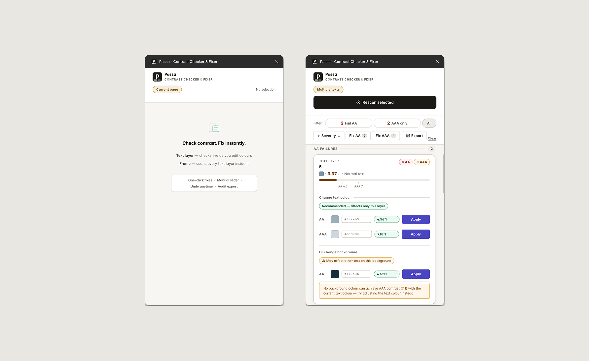
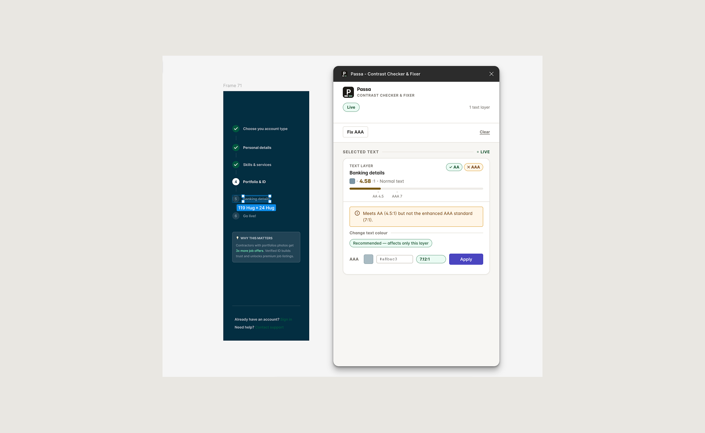
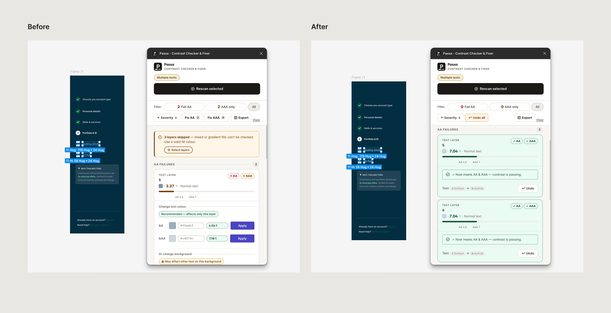
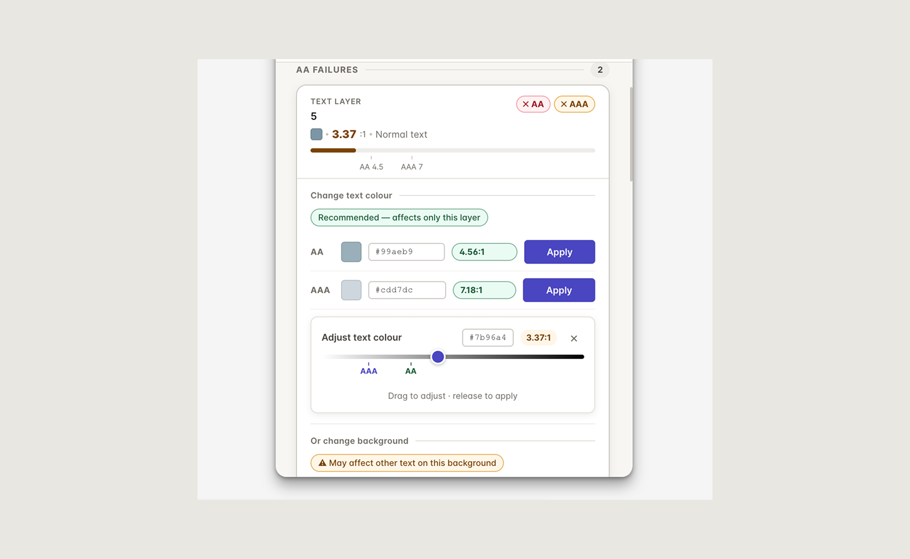

← All WorkAccessibility · Figma Plugin · Solo Project
Passa — contrast that fixes itself
A Figma plugin that checks WCAG 2.2 contrast and surfaces one-click
colour fixes — without ever leaving your design tool.
4.5:1
AA ratio enforced
7:1
AAA ratio enforced
Solo
Design & build
Type
Figma Plugin
Role
Solo — Design & Code
Standard
WCAG 2.2 AA + AAA
Year
2026
01 · Overview
Most accessibility tools tell you what's broken. Passa fixes
it.
Passa is a Figma Community plugin I designed and built entirely solo.
It checks every text layer in a selected frame or full page against
WCAG 2.2, shows the exact contrast ratio with AA and AAA pass/fail
status, and offers colour suggestions that can be applied in a single
click — with a full undo stack. Everything stays inside Figma, with no
context switching required.
All logic runs locally. No network calls, no external tools
Undo stack
Per-layer and bulk — every fix is fully reversible

Plugin panel — welcome state (left) and scan view (right) showing
failing text layers, AA/AAA status, and available fixes
Workflow demonstration — selecting a frame, finding contrast
failures, applying a suggested fix, and undoing the change.
02 · The Problem
Checking contrast in Figma means leaving Figma
The typical designer accessibility workflow: copy a hex value, open a
browser tab, paste into an external checker, note the result, switch
back to Figma, adjust, repeat. For a design with dozens of text
layers, this loop is slow and error-prone — and resets every time the
palette changes.
Existing Figma plugins fell into two camps.
Audit reporters listed failures but offered no fix
path. Manual pair checkers required the designer to
already know which two colours to compare. Neither answered the
question that actually comes up during design work:
"I know this text is failing. What colour should it be?"
From 30–60 minutes per design review to under 10 seconds per layer
03 · Goals
What Passa needed to do
Surface every WCAG 2.2 failure across a frame or full page in
one scan
No manual layer-by-layer checking. A single action covers the
entire scope.
Provide a mathematically correct fix for every failure
Not a heuristic guess — a suggestion derived from the actual
luminance formula, preserving hue and saturation.
Let designers apply and undo fixes without leaving Figma
The entire workflow — find, fix, refine, revert — lives inside
the plugin panel.
Handle real-world Figma complexity
Fill-level opacity, mixed-fill text, nested frames — all
addressed explicitly rather than skipped silently.
04 · Design Process
The suggestion engine
WCAG 2.2 contrast is calculated from the relative luminance of two
colours — a perceptually weighted formula that accounts for the
non-linear response of the human eye. The required ratio varies by
context: 4.5:1 for AA and
7:1 for AAA with normal text; 3:1 and 4.5:1
respectively for large text (18pt+ or 14pt bold+).
The core challenge was generating suggestions that are mathematically
minimal rather than heuristic. For every failing layer, Passa sweeps
lightness from 0–100% in 1% increments, computing the contrast ratio
at each step. It selects the lightness value closest to the original
that still meets the target ratio — preserving hue and saturation,
moving lightness only as far as necessary.
The engine sweeps lightness 0–100% and returns the nearest passing
value at each threshold
Fill opacity detection
A text layer with 60% fill opacity renders as a lighter colour than
its hex value alone suggests. Passa reads the fill's opacity and
blends it against the detected background before computing the
contrast ratio, so the result reflects what is actually visible on
screen. For suggestions, Passa finds the fill hex that when rendered
at the existing opacity, achieves the target contrast ratio. The
suggested colour can be applied directly to the fill without adjusting
the opacity.
Background detection
Text can sit inside multiple nested frames, groups, and auto-layout
containers. Passa walks the parent chain to find the nearest ancestor
with a solid fill, skipping transparent and invisible fills. If no
background can be found — text placed on the canvas directly — the
layer is excluded and a reason is shown.
05 · UI Design
The panel — two modes, one space
The plugin panel sits at 300px wide — standard Figma plugin width. Two
modes share the same space without switching screens.
Mode 01
Single-layer check
Selecting any text node immediately shows its contrast ratio, AA
and AAA status, and fix suggestions. No scan button — it reacts to
Figma's selection event.
Mode 02
Scan mode
Scanning a frame produces a filterable list of every failing
layer. Filter chips (AA fails / AAA-only fails / All) show live
counts that update as fixes are applied — giving the designer a
real-time sense of progress.

Single-text mode — current contrast ratio, AA/AAA status, and
suggested text and background fixes in one view

Before and after a fix — failing layers are corrected and the panel
confirms passing AA/AAA results

Manual lightness adjustment — change a suggested colour while
watching the contrast ratio update against AA/AAA thresholds
06 · Brand
A visual identity that passes its own checker
Passa needed a brand that felt considered alongside Figma's neutral
dark-chrome interface while clearly communicating its purpose. The
palette was chosen so that every functional colour in the plugin UI
achieves WCAG AAA contrast against its background — the tool itself is
fully accessible.
Charcoal
#1C1A16
Parchment
#F7F6F3
Sage
#7FB299
Forest
#175C38
Indigo
#4A45C0
Gold
#7A5B0E
Forest (#175C38) — pass state
Chosen specifically because it achieves 7.40:1 AAA contrast against
Parchment. The plugin's own interface passes its own checker.
07 · Technical Notes
Unglamorous decisions that mattered
Colour scale boundaries
0–1 vs 0–255 — a critical boundary
The Figma API returns fill colours as 0–1 fractional values. The
contrast utility consumes 0–255 integers. Mixing the two scales
produces malformed hex strings and contrast ratios off by large
margins. Tracking this boundary throughout the codebase is one of
the more unglamorous but consequential parts of the
implementation.
Non-destructive undo
Per-layer undo stack with snapshot at first fix
Each applied fix pushes an entry containing the original hex,
replacement hex, node ID, and paint index. The original is
snapshotted at the time of the first fix — not recaptured on
subsequent fixes — so multi-step corrections don't accumulate
drift. Bulk Fix applies sequentially; Undo All reverses the full
sequence in order.
Figma API constraints
figma.mixed, multi-fill text, and the postMessage channel
figma.mixed is a Symbol returned for text nodes with per-character
fills — it must be detected before any array operation to avoid a
runtime crash. Writing colours back to a multi-fill layer requires
cloning the full fills array; mutating in place has no effect. The
UI communicates through a postMessage dispatch map, replacing a
growing if-else chain.
08 · Audit Report
From scan results to a shareable record
Passa can generate a Figma frame documenting the scan results. The
report gives developers a clear record of failing layers, contrast
ratios, WCAG status, and the suggested direction for correction,
without requiring them to open the plugin themselves.
Audit report demonstration — exporting scan results into a Figma
frame ready to share with developers.
One report turns a list of failures into a shared implementation
brief.
09 · Outcomes
What shipped
WCAG 2.2
Full contrast engine — AA and AAA for normal and large text
Live check
Ratio and suggestions appear instantly on selection — no scan
button needed
Bulk fix
Apply AA or AAA corrections across all failing layers in a single
action
Audit export
Generates a Figma frame documenting all scan results — shareable
with developers
"Every functional colour in the plugin UI was verified to meet WCAG
AAA contrast before shipping. A tool for accessibility should itself
be accessible."